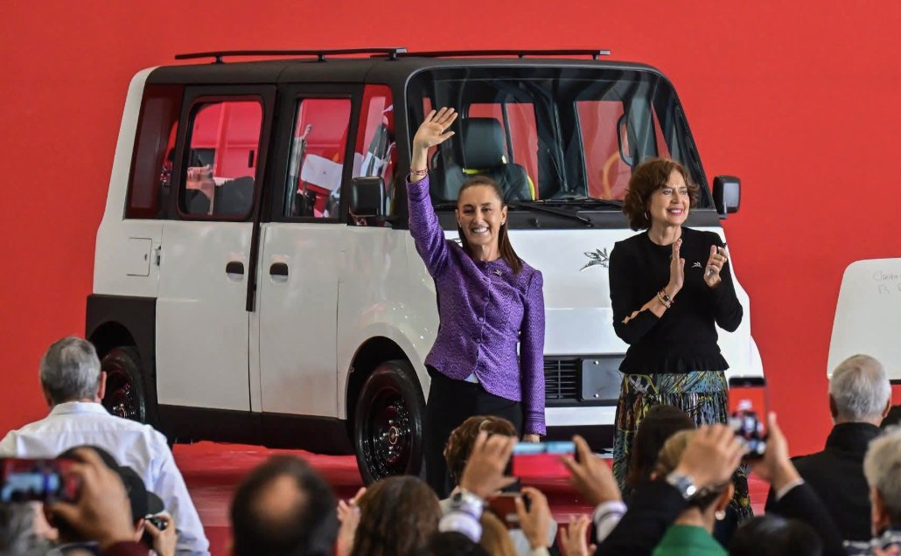

Mexican President Claudia Sheinbaum has unveiled the Olinia 1, a low-speed, ultra-affordable EV designed and built in Mexico. With a target price of about $12,000 CN and deliveries projected for summer of 2027, it seats up to 6, with ample room for cargo.
It goes up to 125 kilometres per charge, saving an estimated $4,000 a year in fuel and maintenance. It's five times cheaper to run than a gas vehicle and less than half the operating cost of a motorcycle.
Olinia is part of Plan México, reflecting a country's commitment to education, science, technology and innovation. As President Sheinbaum put it, it is "a seed" for a national industry, with universities, research centres and government building new technologies together. Mexico is building its own. What would it take for BC to do the same?
Tomorrow: the US just jumped in too.
Dave Haberman
